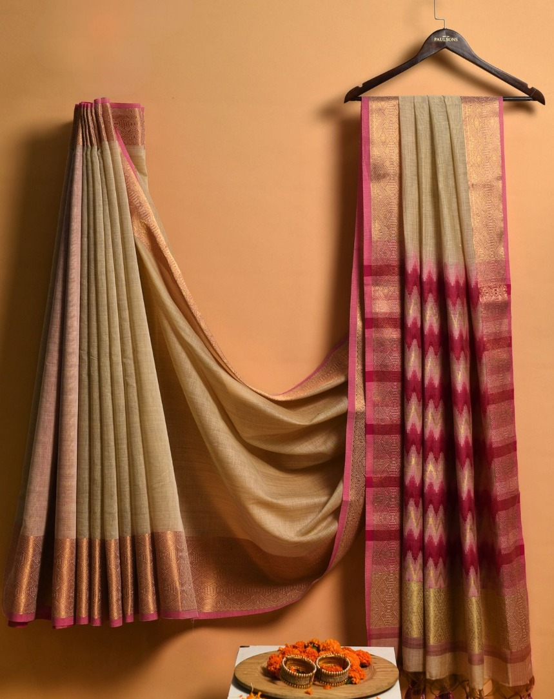
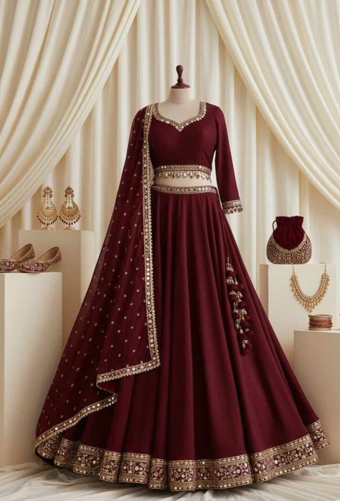
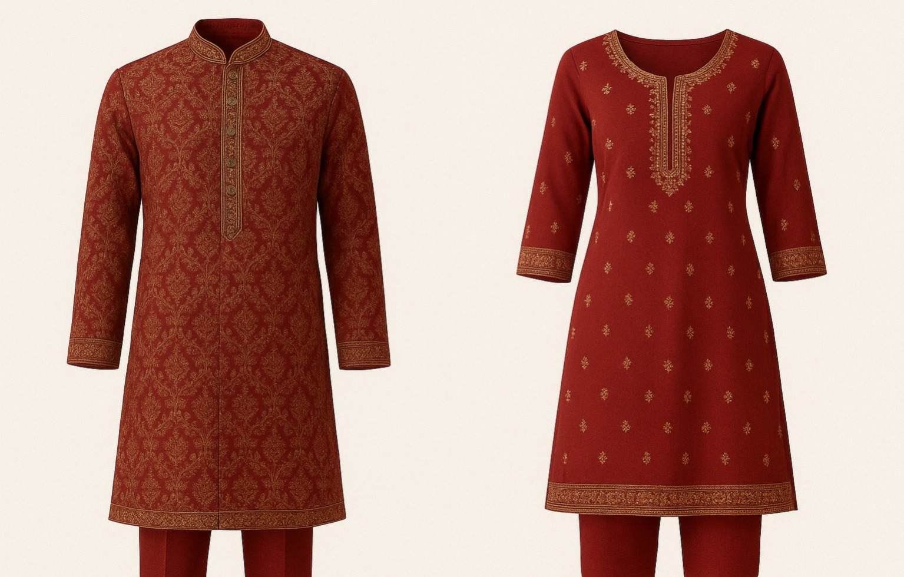

A saree is a long, unstitched piece of fabric, typically 5 to 9 yards long,
worn by women in the Indian subcontinent and other parts of South Asia. It is
draped around the body in various styles over a petticoat and a fitted blouse, and
its history dates back to the Indus Valley Civilization. Sarees come in a wide variety
of materials, colors, and designs, reflecting the rich cultural heritage of the region.

A lehenga choli is a traditional three-piece Indian outfit consisting of a long,
flowing skirt (lehenga), a fitted blouse (choli), and a long scarf or shawl (dupatta).
It is a popular choice for festivals and weddings, known for its vibrant colors and
intricate designs, which can be adapted from classic to modern styles.

A kurta is a long, loose-fitting tunic of South Asian origin,
while a kurti is a shorter, more modern version traditionally worn by women.
Though the terms are sometimes used interchangeably, their key distinctions lie in
length, fit, and formality.
